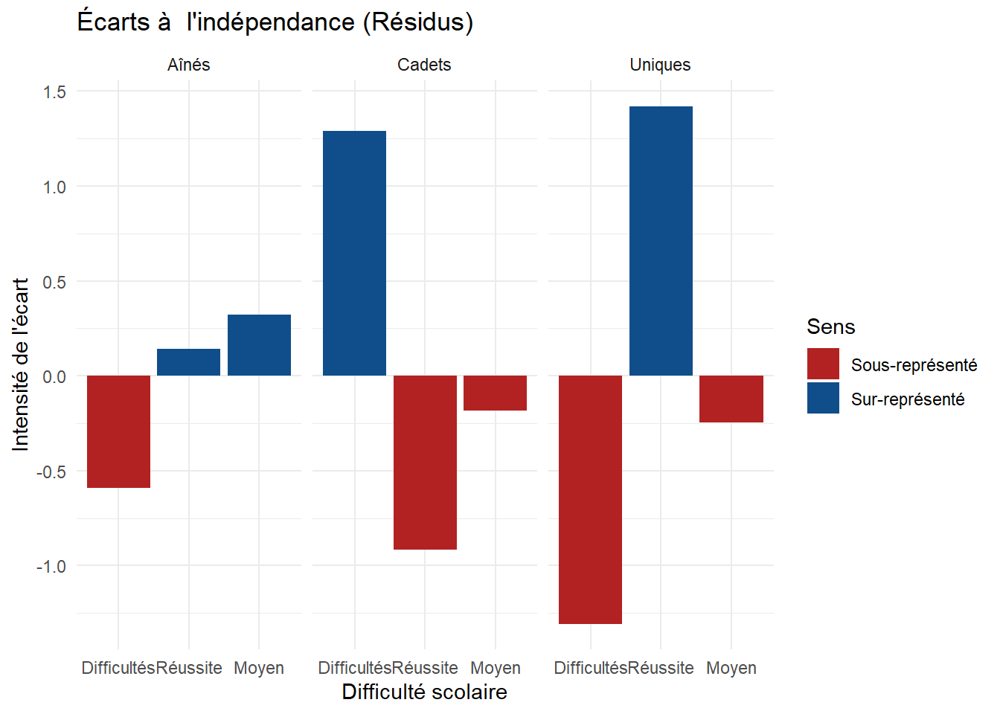

L’objectif : Explorer pourquoi certains enfants de familles très diplômées rencontrent des difficultés scolaires. Est-ce une question de “rang de naissance” ?
Le parcours de l’enquête :
Exploration (A & B) : Comprendre qui a été interrogé et comment les données sont codées.
Croisement (C) : Construire un Tableau Croisé (TCD) pour comparer Aînés et Cadets.
Vérification (C) : Utiliser le test du Khi-deux pour savoir si nos résultats sont probants.
Visualisation (D) : Analyser les Résidus pour voir où la réalité s’écarte du modèle, et déjouer les pièges de notre cerveau !
[A] Mission : Le Contexte
Analyse des difficultés scolaires (G. Henri-Panabière)
L’étude sociologique
Nous travaillons sur l’article de Gaële Henri-Panabière (2010) : « Élèves en difficultés de parents fortement diplômés ».
📝 Travail à faire (Questions de contexte) :
À l’aide du document TexteTD4.pdf, répondez aux questions suivantes :
Quel est le champ de l’étude ?
Quelle est l’unité statistique ?
Quelle est l’année de la collecte ?
Qui a collecté les données ?
Quelle est la taille de l’échantillon ?
Cliquez ici pour voir les réponses
Champ : Élèves de 6ème/5ème de 4 collèges lyonnais (familles fortement diplômées).
Unité : Le collégien (unité statistique de base).
Année : 1999 (enquête de terrain).
Collecteur : G. Henri-Panabière (recherche doctorale).
Taille : 677 questionnaires exploitables.
La question de recherche
L’objectif est d’identifier des facteurs de fragilité inhabituelle au sein de familles dotées d’un fort capital culturel.
Hypothèse de travail : Le rang de naissance (Aîné / Cadet / Unique) influence-t-il la probabilité de rencontrer des difficultés scolaires ?
[B] Prise en main
Exploration du dictionnaire et des données
Le dictionnaire des variables
Ouvrez le fichier TD4- ghp_mesheritiers_dico.rtf.
🔍 Focus sur la question 1 :
Libellé : « Comment se sent votre enfant au collège avec ses camarades ».
Modalités : 1. À l’aise / 2. Mal à l’aise / 3. Ça dépend / 4. Autre / 9. NR.
Type de variable : Qualitative nominale.
📁 Les données brutes :
Ouvrez DonneesTD4.xlsx.
* Structure : 1 ligne = 1 individu | 1 colonne = 1 variable.
* Méthode : Les données sont codées. Pour les analyser, il faut toujours croiser le fichier Excel avec le dictionnaire RTF.
[C] Analyse Croisée
Tableau Croisé Dynamique (TCD)
1. Créer le TCD sur Excel
Croisons le Rang de naissance (V0153) et les Difficultés (V0008).
Lignes :V0153.
Colonnes :V0008.
Valeurs :V0008 (choisir le paramètre “Nombre”).
NoteAstuce TCD
Pour obtenir les pourcentages directement : Clic droit dans le tableau > Afficher les valeurs > % du total de la ligne.
2. Le script de base sous R
Voici le code pour importer les données et créer le tableau d’effectifs.
library(tidyverse)
Warning: package 'tidyverse' was built under R version 4.5.2
Warning: package 'ggplot2' was built under R version 4.5.2
Warning: package 'tidyr' was built under R version 4.5.2
Warning: package 'readr' was built under R version 4.5.2
Warning: package 'purrr' was built under R version 4.5.2
Warning: package 'dplyr' was built under R version 4.5.2
Warning: package 'forcats' was built under R version 4.5.2
Warning: package 'lubridate' was built under R version 4.5.2
library(readxl)
Warning: package 'readxl' was built under R version 4.5.2
library(questionr)
Warning: package 'questionr' was built under R version 4.5.2
# Importationdf <-read_excel("data/DonneesTD4.xlsx")# Tableau d'effectifs (V0153 x V0008)tab <-table(df$V0153, df$V0008)# Labellisation pour la clartérownames(tab) <-c("Aînés", "Cadets", "Uniques")colnames(tab) <-c("Difficultés", "Réussite", "Moyen")print(tab)
# Est-ce que ce lien est fort ? (V de Cramer)cramer.v(tab)
[1] 0.08248055
Pour analyser ce croisement, il ne faut pas confondre l’existence d’un lien (P-value) et son importance réelle (V de Cramer).
1. Le verdict : Le lien existe-t-il vraiment ? (P-value)
Avec une p-value = 0.147, nous sommes au-dessus du seuil de tolérance de 0.05.
* Ce que ça veut dire : Nous n’avons pas assez de preuves statistiques pour affirmer que le rang de naissance influence la réussite scolaire. Les petites différences observées dans le tableau sont très probablement de simples fluctuations dues au hasard.
2. La gravité : Si le lien existait, serait-il fort ? (V de Cramer)
Notre test affiche un V de Cramer de 0.082.
* Ce que ça veut dire : En sciences sociales, un score inférieur à 0.10 caractérise de toute façon un effet “nul ou très faible”.
* Conclusion finale : Mathématiquement, le lien n’est pas prouvé. Et sociologiquement, même si l’échantillon était plus grand et que le test devenait “significatif”, l’impact réel du rang de naissance sur la scolarité resterait ici dérisoire.
[D] Analyse des écarts : Les Résidus
Où la réalité s’écarte-t-elle de la théorie ?
Le concept de Résidu : Le détecteur d’anomalies
Le test du Khi-deux nous donne une réponse globale (ici : Pas de lien global significatif). Mais il ne nous dit pas où se trouve le lien potentiel. C’est là que les résidus entrent en jeu.
Un résidu, c’est l’écart entre la réalité et la théorie :
* La théorie (Effectif Théorique) : Ce qu’on devrait observer dans chaque case si le monde était parfait et que le rang de naissance n’avait strictement aucune influence sur l’école.
* La réalité (Effectif Observé) : Ce que vous avez vraiment compté dans votre tableau de contingence.
Formule du résidu standardisé :\[ Résidu = \frac{Observé - Théorique}{\sqrt{Théorique}} \]
Visualisation R (Résidus)
Voici comment R calcule ces résidus et comment ggplot2 les colorise :
# En rajoutant $residuals, R donne le tableau exact des écarts case par case.res <-as.data.frame(chisq.test(tab)$residuals)ggplot(res, aes(x = Var2, y = Freq, fill = Freq >0)) +geom_bar(stat ="identity") +facet_wrap(~Var1) +scale_fill_manual(values =c("firebrick", "dodgerblue4"),labels =c("Sous-représenté", "Sur-représenté")) +theme_minimal() +labs(title ="Écarts à l'indépendance (Résidus)",x ="Difficulté scolaire", y ="Intensité de l'écart", fill ="Sens")

Comment lire ce graphique ? (1/2)
Ce graphique est la traduction visuelle directe des résidus calculés précédemment. L’axe central (le 0) représente l’indépendance totale (la théorie parfaite).
🔵 Les barres bleues (Résidus positifs) = La Sur-représentation : Il y a plus d’étudiants dans cette case que ce que le hasard prédirait.
Exemple : Les Cadets ont une barre bleue sur “Difficulté”. Ils sont sur-représentés parmi les élèves en difficulté.
🔴 Les barres rouges (Résidus négatifs) = La Sous-représentation : Il y a moins d’étudiants dans cette case que ce qu’on attendrait par hasard.
Exemple : Les enfants Uniques ont une barre rouge sur “Difficulté”. Ils y sont sous-représentés.
Comment lire ce graphique ? (2/2) : La Règle du +/- 2
Attention, quelle est l’unité de ce graphique ? L’unité (le fameux -0,5 ou +1,5) n’est pas un nombre d’étudiants ou un pourcentage. C’est une unité statistique standardisée. Son intérêt est de fournir une échelle universelle pour repérer les anomalies.
La Règle d’or du +/- 2 :
* Autour de 0 : C’est exactement l’effectif théorique attendu.
* Entre -2 et +2 : C’est la zone du “bruit statistique”. Les différences que l’on voit sont très probablement dues au simple hasard de l’échantillonnage.
* Au-delà de +2 (ou sous -2) : L’anomalie devient “significative”. La case est tellement remplie ou vide que le hasard ne suffit plus à l’expliquer.
L’exemple concret : Le piège pédagogique
Cas pratique : Lisons le résidu de -0,5 pour les Aînés en difficulté.
* Analyse sociologique spontanée : “La barre est rouge et pointe vers le bas, les aînés ont donc moins de difficultés scolaires !”
* Analyse statistique rigoureuse : Le graphique montre bien un déficit (-0,5), mais il n’atteint absolument pas le seuil critique de -2. L’écart humain derrière ce -0,5 est minime (quelques étudiants à peine). Sociologiquement, on ne peut tirer aucune conclusion de cette fluctuation.
⚠️ Le point de recadrage fondamental :
Souvenez-vous de la p-value globale (0.147) ! Elle nous avait prévenus qu’il n’y avait pas de lien.
Sur ce graphique, aucune barre ne franchit la ligne des +/- 2. Notre cerveau humain a envie de trouver une explication (“les cadets galèrent plus !”), mais la statistique nous rappelle à l’ordre : ce tableau ne contient que du bruit statistique. Les statistiques servent justement à nous empêcher de sur-interpréter le hasard.
Pourquoi pas une régression ?
NoteThéorie
La régression linéaire (droite) nécessite des variables quantitatives (ex: Revenu en €). Pour des variables qualitatives (catégories comme le Rang), on utilise le Khi-deux. Les résidus que nous venons de tracer sont l’équivalent des résidus de régression : ils mesurent l’écart entre la réalité et la prédiction (ici, la prédiction d’indépendance).
Conclusion
Synthèse Séquence 4
Le TCD est l’outil pivot pour croiser deux variables qualitatives.
La p-value est le juge de paix : si elle est > 0.05, les variables sont considérées comme indépendantes, il n’y a pas de lien statistique significatif.
Les résidus agissent comme des détecteurs d’anomalies (seuil à +/- 2) pour pointer les sur/sous-représentations spécifiques, mais attention à ne pas sur-interpréter le bruit statistique !
Le script R permet d’automatiser et de fiabiliser ces étapes.
Comment lire ce graphique ? (1/2)
Ce graphique est la traduction visuelle directe des résidus calculés précédemment. L’axe central (le 0) représente l’indépendance totale (la théorie parfaite).